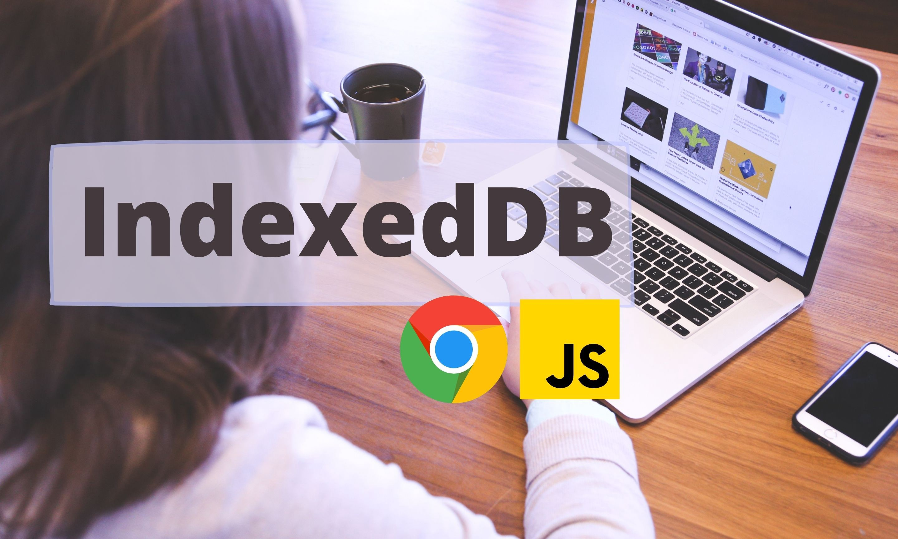
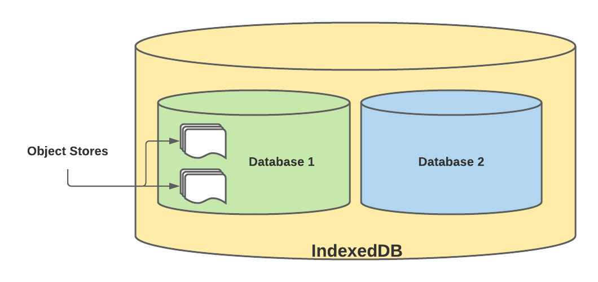

如何在浏览器上使用 NoSQL 数据库 IndexedDB

你听说过浏览器上的 NoSQL 数据库吗？
IndexedDB 是一个大型的 NoSQL 存储系统。它允许你在用户的浏览器中存储任意内容。除了通常的查找、读取和更新操作外，IndexedDB 还支持事务。
你可以在下面找到 IndexedDB 的示例。

在本文中，我们将重点介绍以下内容：
- 为什么我们需要 IndexedDB
- 如何在应用程序中使用 IndexedDB
- IndexedDB 的功能
- IndexedDB 的局限
- IndexedDB 是否适合你的应用程序
为什么我们需要 IndexedDB
IndexedDB 被认为比本地存储（
localStorage）更强大！
你知道背后的原因吗？让我们一起找出答案。
- 可以存储比本地存储（
localStorage）大得多的数据量
IndexedDB 没有像本地存储（localStorage）那样的特殊存储限制（介于 2.5MB 和 10MB 之间）。IndexedDB 存储的最大限制取决于浏览器和磁盘空间。例如，Chrome 和基于 Chromium 的浏览器最多允许 80% 的磁盘空间可供使用。如果你有 100GB，则 IndexedDB 最多可以使用 80GB 的空间，单个来源最多可以使用 60GB。 Firefox 允许每个来源最多 2GB，而 Safari 允许每个来源最多 1GB。
- 可以存储基于键值对
{ key: value }的任意类型值
IndexedDB 存储不同数据类型的灵活性更高。支持的数据类型不仅包括字符串类型，还包括二进制数据（ArrayBuffer 对象、Blob 对象等）。而 IndexedDB 在内部使用对象存储来保存数据。
- 提供查找接口
这个功能在其他浏览器存储选项（如本地存储 localStorage 和会话存储 sessionStorage）中都没有。
- 对于不需要持续联网的 Web 应用程序很有用
IndexedDB 对于在线和离线工作的应用程序都非常有用。例如，它可以用于渐进式 Web 应用程序（PWA）中的客户端存储。
- 可以存储应用状态
通过为频繁使用的用户存储应用程序状态，可以大幅提高应用程序的性能，让应用程序可以在后续与后端服务器同步，并通过懒加载来更新应用程序。
让我们看一下可以存储多个数据库的 IndexedDB 结构。
IndexedDB 结构

如何在应用程序中使用 IndexedDB
在以下内容中，我们将探讨如何在应用程序中使用 IndexedDB。
1. 使用 window.indexedDB 打开数据库连接
const openingRequest = indexedDB.open('UserDB', 1);
在这里，UserDB 是数据库名称，1 是数据库的版本。这将返回一个对象，该对象是 IDBOpenDBRequest 接口的实例。
2. 创建对象存储
开启数据库连接后，将触发 onupgradeneeded 事件，该事件可用于创建对象存储。
// 创建 UserDetails 对象存储和索引
request.onupgradeneeded = (event) => {
let db = event.target.result;
// 创建 UserDetails 对象存储
// 具有自动递增 id
let store = db.createObjectStore('UserDetails', {
autoIncrement: true
});
// 在 NIC 属性上创建索引
let index = store.createIndex('nic', 'nic', {
unique: true
});
};
3. 将数据插入对象存储
只要开启数据库连接，就可以在 onsuccess 事件处理程序中管理数据。插入数据分四步进行。
function insertUser(db, user) {
// 创建新的事务
const txn = db.transaction('User', 'readwrite');
// 获取 UserDetails 对象存储
const store = txn.objectStore('UserDetails');
// 插入新记录
let query = store.put(user);
// 处理成功案例
query.onsuccess = function (event) {
console.log(event);
};
// 处理错误案例
query.onerror = function (event) {
console.log(event.target.errorCode);
}
// 事务结束后关闭数据库
txn.oncomplete = function () {
db.close();
};
}
创建插入函数后，可以使用请求的 onsuccess 事件处理程序插入更多记录。
request.onsuccess = (event) => {
const db = event.target.result;
insertUser(db, {
email: 'john.doe@outlook.com',
firstName: 'John',
lastName: 'Doe',
});
insertUser(db, {
email: 'ann.doe@gmail.com',
firstName: 'Ann',
lastName: 'Doe'
});
};
可以在 IndexedDB 上执行很多操作。包括下面这些：
- 通过键（key）从对象存储中读取或查找数据
- 通过索引（index）从对象存储中读取或查找数据
- 更新记录的数据
- 删除一条记录
- 从旧版本的数据库迁移等
如果你需要关于如何实现上述操作的资料，请在下方评论区告诉我。你也可以参考这里获得更多信息。
IndexedDB 的功能
IndexedDB 提供了许多其它浏览器存储无法实现的特殊功能。下面简要说明一些功能。
- 具有异步 API
这样就可以在不阻塞 UI 线程的情况下执行高代价的操作，并为用户提供更好的体验。
- 支持可靠性事务
如果其中一个步骤失败，事务将被取消，数据库将回滚到以前的状态。
- 支持版本控制
你可以在创建数据库时对其进行版本控制，并在需要时对其进行升级。在 IndexedDB 中也可以从旧版本迁移到新版本。
- 支持私有域
数据库是私有域，因此任何站点都不能访问其它网站的 IndexedDB 存储。这也称为同源策略。
IndexedDB 的局限
到目前为止，IndexedDB 似乎很有希望用于客户端存储。然而，有几个限制值得注意。
- 虽然现代浏览器支持 IndexedDB，但是 IE 等浏览器却没有完全支持。

- IndexedDB 在 Firefox 的无痕浏览模式下是完全禁用的 —— 通过隐身窗口访问应用程序时，接口无法使用可能导致应用程序出现故障。
IndexedDB 是否适合你的应用程序
考虑到 IndexedDB 提供的诸多特性，这个百万美元问题（译者注：指至关重要的问题）答案可能是 Yes！然而，在得出结论之前，先问自己以下几个问题。
- 你的应用程序需要离线访问吗？
- 是否需要在客户端存储大量数据？
- 是否需要在大量数据中快速定位或查找数据？
- 应用程序是否使用 IndexedDB 支持的浏览器访问客户端存储？
- 需要存储包括 JavaScript 对象在内的各种类型的数据吗？
- 从客户端存储中写入或读取数据需要是非阻塞的吗？
如果以上所有问题的答案都是肯定的，那么 IndexedDB 是你的最佳选择。但是，如果不需要这样的功能，你也可以选择本地存储（localStorage），因为它提供了大多数浏览器采用和易于使用的应用编程接口（API）。
总结
当我们考虑所有客户端存储机制时，IndexedDB 显然是胜出者。让我们来看一下不同客户端存储方法的总结比较。

希望你对 IndexedDB 及其特性有一个清晰的认识。也让我们知道你的想法。
如果发现译文存在错误或其他需要改进的地方，欢迎到 掘金翻译计划 对译文进行修改并 PR，也可获得相应奖励积分。文章开头的 本文永久链接 即为本文在 GitHub 上的 MarkDown 链接。
掘金翻译计划 是一个翻译优质互联网技术文章的社区，文章来源为 掘金 上的英文分享文章。内容覆盖 Android、iOS、前端、后端、区块链、产品、设计、人工智能等领域，想要查看更多优质译文请持续关注 掘金翻译计划、官方微博、知乎专栏。